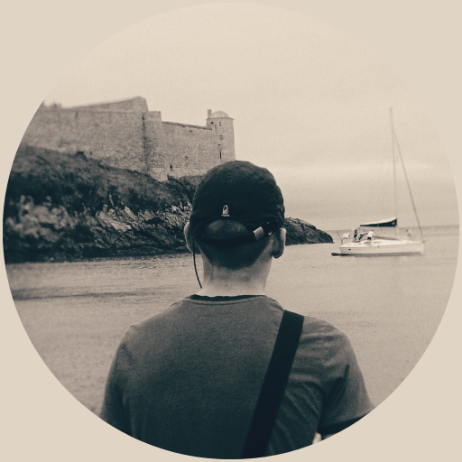

Passionné de sciences et technologies, je suis animé par le nucléaire, le quantique, l'informatique et la cybersécurité. Curieux et ambitieux, je suis en quête constante de nouveaux défis et d'opportunités d'apprendre. Animé par une passion dévorante pour les technologies, j'aspire à devenir un ingénieur de premier plan dans le domaine de la cybersécurité ou du quantique. Ce portfolio me sert de plateforme pour partager mon ardent enthousiasme pour les domaines captivant des sciences et des technologies.
Je possède de solides compétences dans les langages de développement web tels que HTML, CSS, Javascript et Python. J'ai de l'expérience dans la réalisation de projets web complets intégrant ces langages, ainsi que dans la création de scripts Python pour automatiser des tâches. J'ai également des connaissances de base sur le cloud computing. En plus de mes compétences techniques, je suis un apprenant rapide et autonome, capable d'analyser et de résoudre des problèmes efficacement.
Graphiste créatif et expérimenté, je maîtrise Figma et les logiciels de création de logos et DA. Conception de visuels attrayants et percutants respectant l'identité de la marque et le public cible. Passionné par le design graphique, ses tendances et ses liens avec le marketing, la psychologie et la technologie.